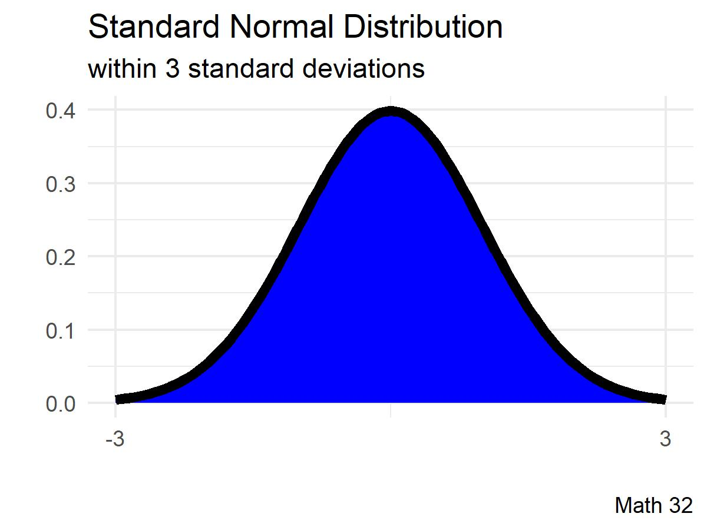

Development
Let us start with the mother function \(y = e^{-x^{2}}\)
- symmetric graph and function
- horizontal asymptote
Next, most of the scientific community accepts placing a horizontal scaling factor of 1/2 in the exponent
\[y = e^{-x^{2}/2} = \text{exp}\left(-\displaystyle\frac{x^{2}}{2}\right)\]
to ensure that later calculations in the standard normal distribution have unit variance: \(\sigma^{2} = 1\)
Bell Curves
For elementary statistics courses, teachers say that using the normal distribution is a good idea when the sample size \(n > 30\).
Depending on the situation, modeling with a normal distribution may need a transformation (moving the graph horizontally, stretching, etc.).
Probability Density Function
Historically, it was a good practice to pick one bell curve for calculations.
- Find the value of \(k\) so that \(f(x) = ke^{-x^{2}/2}\) is a probability density function.
Probability Density Function
At this point, we have the probability density function (PDF) of the standard normal distribution, denoted by lower-case Greek letter phi:
\[\text{PDF: } \phi(z) = \displaystyle\frac{1}{\sqrt{2\pi}}e^{-z^{2}/2}\]
Parameters
We will now find the parameters—mean and variance—for the standard normal distribution. We find the expected value with
\[\text{E}[Z] = \displaystyle\int_{-\infty}^{\infty} \! z \cdot \phi(z) \, dz = \displaystyle\frac{1}{\sqrt{2\pi}}\displaystyle\int_{-\infty}^{\infty} \! z e^{-z^{2}/2} \, dz = 0\]
The second moment is
\[\text{E}[Z^{2}] = \displaystyle\int_{-\infty}^{\infty} \! z^{2} \cdot \phi(z) \, dz = \displaystyle\frac{1}{\sqrt{2\pi}}\displaystyle\int_{-\infty}^{\infty} \! z^{2} e^{-z^{2}/2} \, dz = \displaystyle\frac{ \sqrt{2\pi} }{ \sqrt{2\pi} } = 1\]
It follows that the variance is also one unit, so the parameters of the standard normal distribution are \(\mu = 0\) and \(\sigma^{2} = 1\).
The notation \(X \sim N(\mu, \sigma^{2})\) says that random variable \(X\) is normally distributed with mean \(\mu\) and variance \(\sigma^{2}\). For example, the standard normal distribution is denoted as \(Z \sim N(0,1)\)
- What is the median of the standard normal distribution?
Cumulative Distribution Function
The cumulative distribution function (CDF) for the standard normal distribution is defined as the following integral function and denoted by upper-case Greek letter Phi:
\[\Phi(z) = \displaystyle\frac{1}{\sqrt{2\pi}} \displaystyle\int_{-\infty}^{z} \! e^{-t^{2}/2} \, dt\]
Recall: for continuous probability distributions, probabilities are the areas under the curve
Here in Math 32, instead of doing the integral (with the ``polar trick’’) or referring to a textbook standard normal distribution table, we will perform calculations for the normal distribution in terms of CDF \(\Phi\)
Empirical Rule
Statistics instructors like to make the following statements to guide intuition about the normal distribution and standard deviations.
About 67% of data falls within one standard deviation of the mean.
About 95% of data falls within 2 standard deviations of the mean.
About 99% of data falls within 3 standard deviations of the mean.

(optional) Error Function
Some scientific literature refers to the area under the curve of the probability density function of the \(X \sim N(0, 1/2)\) normal distribution as the
\[\text{erf}(x) = \displaystyle\frac{2}{\sqrt{\pi}}\int_{0}^{x} \! e^{-t^{2}/2} \, dt\]
and we can recover the CDF of the standard normal distribution with
\[\Phi(x) = \displaystyle\frac{1}{2}\left[ 1 + \text{erf}\left(\displaystyle\frac{x}{\sqrt{2}}\right) \right]\]
General Normal Distribution
When we model applications with \(X \sim N(\mu, \sigma^{2})\), by applying the \(z\)-score transformation
\[z = \displaystyle\frac{x - \mu}{\sigma}\]
the normal distribution has probability density function
\[\text{PDF: } f(x; \mu, \sigma) = \displaystyle\frac{1}{\sigma\sqrt{2\pi}} \cdot e^{-\frac{1}{2}\left(\frac{x-\mu}{\sigma}\right)^{2}}\]
and cumulative distribution function
\[F(x) = \Phi\left(\displaystyle\frac{x-\mu}{\sigma}\right) = \displaystyle\frac{1}{2}\left[1 + \text{erf}\left(\displaystyle\frac{x-\mu}{\sigma\sqrt{2}}\right)\right]\]
\[~\]
R code: pnorm(x, mu, sd)
Applications of the Normal Distribution
Suppose that the incubation period—that is, the time between being infected with the virus and showing symptoms—for Covid-19 is normally distributed with a mean of 8 days and a standard deviation of 3 days. Find the probability that a randomly selected case demonstrated symptoms in fewer than 7 days.
Girl Scout Thin Mint cookies have a mean size of 0.25 ounces. Find the probability that one randomly selected cookie has a size of more than 0.27 ounces if the standard deviation is 0.03 ounces. Assume a normal distribution.
The cones in the eye detect light. The absorption rate of cones is normally distributed. In particular, the “green” cones have a mean of 535 nanometers and a standard deviation of 65 nanometers. If an incoming ray of light has wavelengths between 550 and 575 nanometers, calculate the percentage of that ray of light that will be absorbed by the green cones.
Suppose that the number of french fries in the batches at In-n-Out are normally distributed with a mean of 42 french fries and a standard deviation of 3.7 french fries. Your friend tells you that the In-n-Out employee is flirting with you if you end up with a french fry count in the top 5 percent. How should we characterize the top 5 percent of french fries?
Looking Ahead
- due soon
- WHW6
- JHW4
- Mid-Semester Survey
- Be mindful of before-lecture quizzes
Exam 1 will be on Wed., Mar. 1
- more information in weekly announcements
No lecture session for Math 32:
- Mar 10, Mar 24